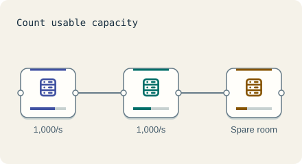

Start · 3 minutes
Numbers you can do in your head
Turn monthly users into requests per second and servers needed, with a pencil.
Open this lesson
Start with people
Say 30 million people use your app a month and each visit makes 20 requests. Not everyone visits daily; a third do, so 10 million visitors a day. That is 200 million requests a day (all numbers approx.).
Divide by a day, then by the peak
Change the visitors, requests and peak. Follow the units from one day to one second before adding spare capacity.
Try the idea
Peak is 9,000 requests a second. Serve it with at least 25% spare app capacity.
Key numbers
- Seconds in a day
- ≈ 100,000. 86,400, rounded for easy math
- 1 million requests a day at 2 KB each
- ≈ 2 GB a day. 2 KB × 1,000,000
- One server
- ≈ 1,000 requests a second. typical web API, approx.
Check your reasoning
Think through these questions before opening the lesson. In the game you can test the idea and compare your reasoning.
- About how many seconds are in a day, for quick math?
- Average load is 2,000 requests a second. Peak is often about:
- One server handles 1,000 requests a second and you need 9,000. How many do you run?
The key point
Divide daily requests by about 100,000 for an average each second. Three times average is an example peak, not a rule. Choose a peak factor for your traffic and leave headroom.
Practise this idea
- Easy
URL shortener
People paste a long web address and get back a short one. Millions of other people then tap that short link, so reading is almost everything. Keep every tap fast, and never lose a link.